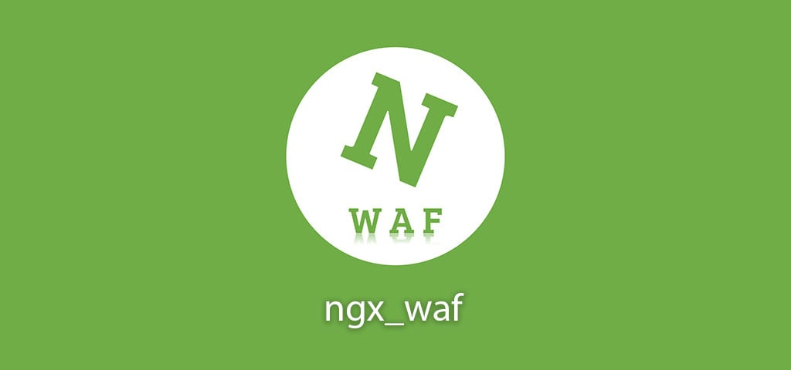

ngx_waf：方便且高性能的 Nginx 防火墙模块
缓存策略为 LRU，IP 检查和 CC 防御花费常数时间，其它的检查花费 O(nm) 的时间，其中 n 是相关规则的条数，m 为执行正则匹配的时间复杂度，但是每次检查过后会自动缓存本次检查的结果，下次检查相同的目标时就可以使用缓存而不是检查全部的规则。不会缓存 POST 请求体的检查结果。

1. 工具特点
介绍了该工具的主要特点以及核心功能！
该 Nginx 的第三方扩展工具，可以防御 CC 攻击(超出限制后自动拉黑对应 IP 一段时间或者使用验证码做人机识别)，可以支持多种黑白名单(IP/POST/URL/UA等等)，还可以提供防护 SQL 注入和 XSS 工具。
- 使用简单
- 配置文件和规则文件书写简单，可读性强
- 基础防护
- 如
IP或IP网段的黑白名单、URI黑白名单和请求体黑名单等
- 如
- 高性能
- 使用高效的
IP检查算法和缓存机制，支持IPV4和IPV6
- 使用高效的
- 高级防护
- 兼容
ModSecurity的规则，你可以使用OWASP的核心规则库
- 兼容
- 友好爬虫验证
- 支持验证
Google、Bing、Baidu和Yandex的爬虫并自动放行，避免错误拦截，主要是基于User-Agent和IP的识别规则
- 支持验证
- 验证码
- 支持三种验证码：
hCaptcha、reCAPTCHAv2和reCAPTCHAv3
- 支持三种验证码：
2. 模块安装
第三方模块我们应该怎么安装呢？
Nginx 提供两种安装模块的方式，即「静态链接」和「动态加载」，通过两种方式安装的模块也分别称为「静态模块」和「动态模块」，可以通过运行脚本 assets/guide.sh 来选择使用静态模块还是动态模块。
# 执行如下命令
$ sh assets/guide.sh
# 如果输出下面这行，则建议使用动态模块
# It is recommended that you use dynamic modules.
# 如果输出下面这行，则建议使用静态模块
# It is recommended that you use static modules.
- [1] 静态模块
编译安装一个新的模块需要知道当前的 Nginx 的 configure 脚本的参数，您可以通过运行 nginx -V 来获取，务必记住 configure arguments: 后面的内容。安装静态模块需要重新编译整个 Nginx，花费的时间相对于安装动态模块比较长。如果不想在替换二进制文件时，关闭 Nginx 服务的话，可以参考官方文档的热部署方案。
# 下载对应的Nginx版本
# http://nginx.org/en/download.html
$ cd /usr/local/src
$ wget https://nginx.org/download/nginx-1.20.1.tar.gz
$ tar -zxf nginx-1.20.1.tar.gz
# 使用稳定版的源码
$ cd /usr/local/src
$ git clone -b lts https://github.com/ADD-SP/ngx_waf.git
# 运行配置脚本
$ cd /usr/local/src/nginx-1.20.1
$ ./configure ARG --add-module=/usr/local/src/ngx_waf
$ sed -i 's/^\(CFLAGS.*\)/\1 \
-fstack-protector-strong -Wno-sign-compare/' \
objs/Makefile
# 编译(非并行/并行)
$ make
$ make -j$(nproc)
# 替换Nginx二进制文件(假设已经安装过)
$ cp objs/nginx /usr/local/nginx/sbin/nginx
- [2] 动态模块 - 下载预构建的模块
通过执行脚本 assets/download.sh 来下载动态模块。
# 用于nginx-1.20.1的LTS版的模块
$ sh assets/download.sh 1.20.1 lts
# 用于nginx-1.20.1的最新版的模块
$ sh assets/download.sh 1.20.1 current
# 执行成功后会有如下输出
checking for command ... yes
checking for libc implementation ... yes
+ GNU C libary
Pulling remote image addsp/ngx_waf-prebuild:ngx-1.20.1-module-beta-glibc
......
Download complete!
如果看到 Download complete! 的话，则说明下载成功，模块会被保存在当前目录下。你可以将其拷贝到一个目录下，然后在 nginx.conf 的顶部添加一行。然后关闭 Nginx 服务并运行 nginx -t。如果没有出错则说明模块被正常加载，反之则说明您的 Nginx 不支持预构建的模块，请编译安装模块。
load_module "/path/to/ngx_http_waf_module.so";
- [3] 动态模块 - 编译动态模块
编译安装动态模块并不需要重新编译整个 Nginx，只需要重新编译所有的模块，所以速度相对静态模块快一些，这也是本文档推荐的方式。
# 下载对应的Nginx版本
# http://nginx.org/en/download.html
$ cd /usr/local/src
$ wget https://nginx.org/download/nginx-1.20.1.tar.gz
$ tar -zxf nginx-1.20.1.tar.gz
# 使用稳定版的源码
$ cd /usr/local/src
$ git clone -b lts https://github.com/ADD-SP/ngx_waf.git
# 运行配置脚本
$ cd /usr/local/src/nginx-1.20.1
$ ./configure --add-dynamic-module=/usr/local/src/ngx_waf --with-compat
$ sed -i 's/^\(CFLAGS.*\)/\1 \
-fstack-protector-strong -Wno-sign-compare/' \
objs/Makefile
# 开始编译动态模块
$ make modules
# 将动态模块拷贝到模块目录(关闭服务)
$ cp objs/*.so /usr/local/nginx/modules
最后，在 Nginx 的配置文件顶部添加一行，表示加载这个编译好的模块。
load_module "/usr/local/nginx/modules/ngx_http_waf_module.so";
3. 模块使用
第三方模块我们应该怎么使用呢？更多参数参考 配置语法
现在就可以在 nginx.conf 内的一个 server 块中添加配置来开启 ngx_waf 模块来配置服务的防火墙了，下面是一个例子。
- [1] LTS 版本
http {
...
server {
...
# on/off 表示启用和关闭
waf on;
# 规则文件所在目录的绝对路径，必须以/结尾
waf_rule_path /usr/local/src/ngx_waf/assets/rules/;
# 防火墙工作模式，STD表示标准模式
waf_mode STD;
# CC防御参数
# 1000表示每分钟请求次数上限，超出上限后封禁对应ip地址60分钟
waf_cc_deny rate=1000r/m duration=60m;
# 最多缓存50个检测目标的检测结果
# 对除了IP黑白名单检测、CC防护和POST检测以外的所有检测生效
waf_cache capacity=50;
...
}
...
}
- [2] Current 版本
http {
# 声明一块共享内存
waf_zone name=waf size=20m;
...
server {
...
# on/off 表示启用和关闭
waf on;
# 规则文件所在目录的绝对路径，必须以/结尾
waf_rule_path /usr/local/src/ngx_waf/assets/rules/;
# 防火墙工作模式，STD表示标准模式
waf_mode STD;
# CC防御参数
# 1000表示每分钟请求次数上限，超出上限后封禁对应ip地址60分钟
waf_cc_deny on rate=1000r/m duration=60m zone=waf:cc;
# 对除了IP黑白名单检测、CC防护和POST检测以外的所有检测生效
waf_cache on capacity=50;
...
}
...
}
4. 常用设置
列出一些 常用的设置，拿来直接就可以使用！
因为模块的配置比较复杂，为了降低使用难度，在这里列出了一些常见用法。
- [1] 针对路径或文件限流
有时你可能想要限制不同的路径或文件的请求速率，比如静态资源和动态资源使用不同的速率限制。
# LTS
# 将静态资源的请求速率限制到10,000次/分钟
location /static/ {
waf_cc_deny rate=10000r/m duration=1h;
}
# 将动态资源的请求速率限制到2,000次/分钟
location /dynamic/ {
waf_cc_deny rate=2000r/m duration=1h;
}
# Current
http {
waf_zone name=waf size=20m;
server {
# 将静态资源的请求速率限制到10,000次/分钟
location /static/ {
waf_cc_deny rate=10000r/m duration=1h zone=waf:cc_static;
}
# 将动态资源的请求速率限制到2,000次/分钟
location /dynamic/ {
waf_cc_deny rate=2000r/m duration=1h zone=waf:cc_dynamic;
}
}
}
- [2] 开启验证码
当你的站点受到 CC 攻击时开启验证码是不错的选择，因为验证码可以帮助你进行人机识别。本模块目前支持三种验证码，你应该选择一个并从其网站上申请到 Sitekey 和 Secret。配置完成之后，重启 nginx 服务。
# 整个站点开启验证码
server {
waf_captcha on prov=hCaptcha secret=your_secret sitekey=your_sitekey;
}
# 为某个路径开启验证码
location {
waf_captcha on prov=hCaptcha secret=your_secret sitekey=your_sitekey;
}
# 当访问频率过高时开启验证码
http {
waf_zone name=waf size=20m;
server {
waf_cc_deny on rate=1000r/m duration=1h zone=waf:cc;
waf_captcha off prov=hCaptcha secret=your_secret sitekey=your_sitekey;
waf_action cc_deny=CAPTCHA zone=waf:action;
}
}
- [3] 拦截请求时启用验证码
如今，许多攻击者都会使用自动工具攻击服务器，这些自动工具会尝试每一个漏洞，有的会被安全措施所拦截，有的则可以躲避检测。 如果攻击者觉得你的价值比较高，可能会手动攻击你的服务。我们并不能完美地防御这些攻击，但却能很简单地提高攻击的成本。
当一个请求被拦截时，ngx_waf 会对该 IP 启用验证码，此时该 IP 想要继续访问就必须完成验证码。这基本可以废掉多数的自动攻击工具，因为这些工具会尝试每一个漏洞，而我们总能识别一些明显的攻击请求并启用验证码，而自动工具时难以通过验证的。对于手动攻击者，这也能提高他们的时间成本。
http {
waf_zone name=waf size=20m;
server {
waf_captcha off prov=xxx sitekey=xxx secret=xxx;
waf_action blacklist=CAPTCHA zone=waf:action;
}
}
- [4] 被攻击时降低带宽占用
当你受到 CC 攻击时，攻击者的 IP 已经被 CC 防护拉黑，但是你的上下行带宽依然很高， 这是因为 CC 防护会返回一个 503 状态码，因此占用了你的带宽，你可以使用下面的配置来降低带宽占用。
444 状态码是 nginx 定义的一个非标准的 HTTP 状态码，其作用就是直接关闭连接，不再发送任何数据。如果你使用了 444 状态码，那么在用户看来你的网站就像是不存在一样。这是因为网站出错一般都会有 HTTP 状态码用来提示错误， 如果访问一个网站连错误提示都没有，那么大概率是这个网站不存在。
# LTS
waf_http_status cc_deny=444;
# Current
waf_action cc_deny=444;
- [5] 抵御分布式 CC 攻击
CC 攻击(HTTP 洪水)是指发送大量的 HTTP 请求来耗尽服务器的资源。如果攻击者使用的 IP 较少则防御较为简单，因为只需要限制 IP 的请求频率，但是如果攻击者使用大量的 IP 进行攻击，仅仅限制 IP 的请求频率是无济于事的。这种使用大量 IP 进行 CC 攻击的方式称为分布式 CC 攻击或分布式 HTTP 洪水。
本模块提供了一些缓解方式，第一种开启验证码来缓解，第二种使用降低带宽占用，第三种使用五秒盾来缓解。你可能听说过 Cloudflare 的五秒盾，本模块的五秒盾和 Cloudflare 的完全不同。它的功能是检测客户端是否能够正确地支持 Cookie，比如发送 Cookie 和正确地处理 Set-Cookie 响应头。你可以从本项目的 assets/ 目录下找到 under-attack.html 并将其拷贝到某个路径下，然后通过修改 nginx 的配置文件来开启五秒盾。
# LTS
# 为整个网站开启五秒盾
server {
waf_under_attack on file=/path/to/under_attack.html;
}
# 为某个路径开启五秒盾
location /path {
waf_under_attack on file=/path/to/under_attack.html;
}
# Current
# 为整个网站开启五秒盾
server {
waf_under_attack on;
}
# 为某个路径开启五秒盾
location /path {
waf_under_attack on;
}
5. 效果测试
如需更多帮助，可以参考 如何测试！
当我们部署和配置服务完成之后，需要测试下防火墙是否正常起作用了，可以通过如下方式进行简单的测试来判断规则是否正常运行。
# 测试时的配置
master_process on;
worker_processes 1;
http {
server {
listen 80;
server_name localhost;
access_log off;
waf on;
waf_mode DYNAMIC !CC !POST;
waf_rule_path /usr/local/src/ngx_waf/rules/;
waf_cache capacity=6000 interval=1h percent=50;
location / {
default_type text/html;
return 200 'hello';
}
}
}
- [1] 简易测试
- 运行下列命令，如果输出
403则表示模块正常工作
- 运行下列命令，如果输出
$ curl -I -o /dev/null --user-agent bench \
-s -w "%{http_code}\\n" https://example.com
- [2] 自动测试
- 项目附带了许多测试用例，你可以通过下面的指令来运行全部的用例
# 这行命令的执行时间比较长
$ cpan Test::Nginx
# 如果目录已经存在则会先删除再创建
$ export MODULE_TEST_PATH=/path/to/temp/dir
# 如果你安装了动态模块则需要指定动态模块的绝对路径，反之则无需执行这行命令
$ export MODULE_PATH=/path/to/ngx_http_waf_module.so
# 自动化测试
$ cd ./test/test-nginx
$ sh ./init.sh
$ sh ./start.sh ./t/*.t
# 可以使用WRK工具测试
$ wrk -c 100 -d 30m -t 1 -s test/wrk/rand.lua --latency \
http://localhost/ -- /path/to/rand-str.txt
6. 注意事项
如需更多帮助，可以参考 常见问题与解答！
本模块只保证对 nginx-1.18.0 或更新的版本的兼容性，且不保证与 Linux 以外的操作系统的兼容性。这里需要注意的是，模块与 ngx_http_rewrite_module 存在兼容性问题。
- 当
return指令生效时，该模块不会生效 - 当
rewrite指令造成了返回(如302重定向)时，该模块不会生效 - 所以可以使用
try_files代替rewrite指令，避免上述问题的出现
# rewrite
if (!-e $request_filename) {
rewrite (.*) /index.php
}
# try_files
try_files $uri $uri/ /index.php;
7. 参考链接
送人玫瑰，手有余香！